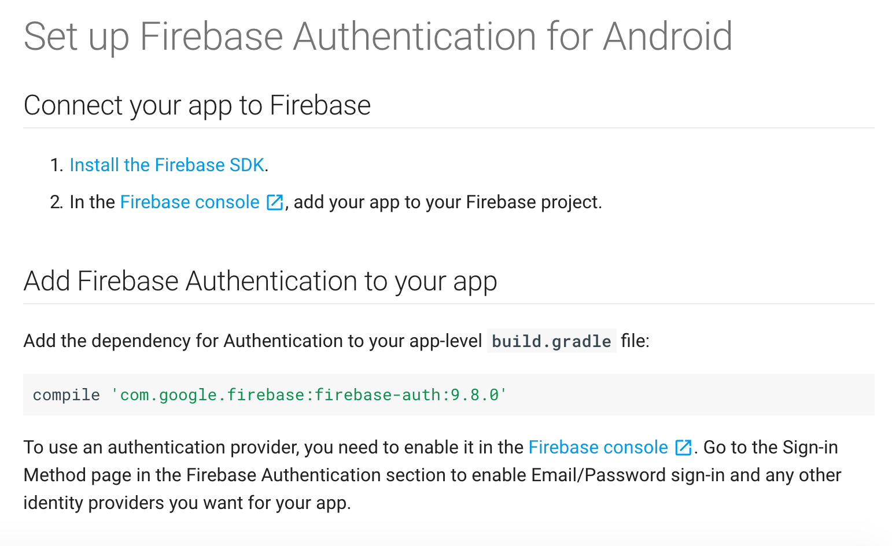
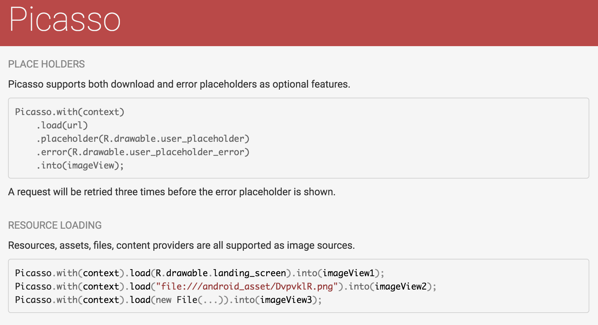
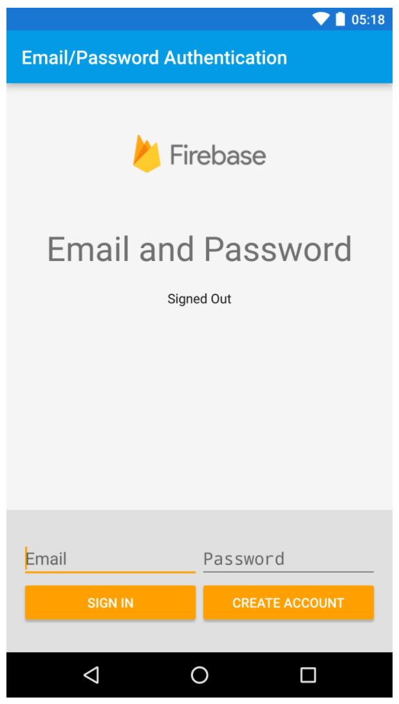

Formal API Documentation
Formal API documentation will list every class, method, and field in the API. Often these are in javadoc format.

Most of the code that makes apps work isn't code you write yourself--instead we use libraries.
A library will provide an API for implementing the features you need.
API stands for Application Program Interface, and it means the classes and methods that you need to use to leverage all this code that other people wrote.
Dependencies are libraries that your project needs to work.
You can add libraries manually by putting a copy of the library (usually a .jar or .aar file) in your project and instructing the gradle build script to include this file when it builds your app.
Or, you can use a dependency management system, like gradle, to automatically download and include the required libraries into your app.
Gradle is both our build tool and our dependency managment system. The build.gradle script gives instructions for how to build the app and which dependencies to download and include.
apply plugin: 'com.android.application'
android {
compileSdkVersion 24
buildToolsVersion "24.0.3"
defaultConfig {
applicationId "com.audreytroutt.androidbeginners.firstapp"
minSdkVersion 16
targetSdkVersion 24
versionCode 1
versionName "1.0"
}
buildTypes {
release {
minifyEnabled false
proguardFiles getDefaultProguardFile('proguard-android.txt'), 'proguard-rules.pro'
}
}
}
dependencies {
compile fileTree(dir: 'libs', include: ['*.jar'])
testCompile 'junit:junit:4.12'
// Support libraries
compile 'com.android.support:appcompat-v7:24.2.1'
compile 'com.android.support:design:24.2.1'
compile 'com.android.support:cardview-v7:24.2.1'
compile 'com.android.support:support-v4:24.2.1'
// picasso
compile 'com.squareup.picasso:picasso:2.5.2'
// TODO Project 3: add the firebase auth dependencies here
}Once you've added a library to your project, you need to know how to use it. There are four kinds of documentation for most libraries:
Getting started instructions usually tell you how to get the library and maybe how to initialize the main class.
Formal API documentation will list every class, method, and field in the API. Often these are in javadoc format.
Feature usage guides give you step by step instructions for how to use a specific feature of the API.
Sample apps are helpful because you can see a working example of the API.
When we use an authentication service there are typically three steps:

Firebase is a service that can do authentication AND store data.
Rather than forcing your app users to remember a new username and password you can let them log in with Google instead.
You can authenticate with Google and then use the Google success token to authenticate with Firebase.